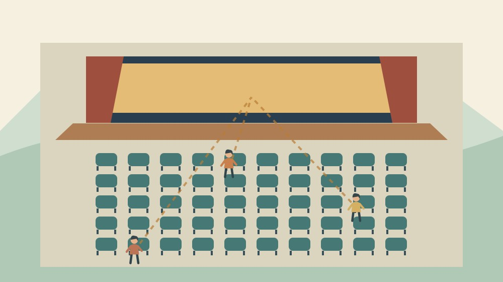

森町文化会館の座席の見え方｜公式写真で比較

Q. 森町文化会館の座席は、買う前に見え方を比べられる？
森町文化会館は、大ホールの位置別のステージ写真を公開しています。中央・左右・後方を見比べ、座席表で列と位置を確かめられます。ただし写真は残席表ではなく、公演当日の舞台装置や前席の観客による視界も保証しません。希望位置を選んだ後、販売窓口で空席と公演条件を確認してください。
座席を選ぶ仕事を、家族の誰か一人に背負わせない
森町文化会館の公演へ家族を誘うとき、「どこでもいい」と言われると席を決める人は迷います。舞台へ近いほうがよいのか、全体を見たいのか、左右の位置を気にするのか。私は、買う役を引き受ける人が、その希望まで一人で想像しなくてよい方法を考えたいと思います。
大石浩之（磐田市／不動産業）です。家や土地の案内では、図面で分かることと、そこから見える景色を分けて考えます。今回扱うのは、文化会館の公式写真を使った座席の選び方です。私が各席に座って公演を見た評価ではありません。写真から確かめられる範囲を整理する記事です。
公演を開く側には、出演者を迎え、客席を整え、入退場を案内する仕事があります。私は、来場する側が希望を先に整理することも、その準備を支えると思います。窓口で「一番よい席」を探してもらうより、どの見え方を望むかを伝えるほうが相談は具体的になります。
事実整理｜公式の座席写真には位置の表示がある
森町文化会館公式「大ホール座席表のご案内」は、各座席から見たステージの様子を紹介しています。確認日は2026年10月24日です。ページの更新日は2025年5月18日であり、今秋に新しく公開された写真だとは扱いません。秋冬の指定席公演を検討するときに使える既存資料です。
掲載番号は1から18まであります。B列右隅、C列左側、E列中央、F列右隅、I列中央、J列右隅など、列と左右・中央の位置を付した写真です。写真だけを見るのではなく、その下に書かれた位置を一緒に読むと、座席表との対応を確認できます。
後方側の比較には、N列中央、P列左隅、Q列右隅、T列左側、U列の左右などの写真があります。U列だけでも複数の位置が示されています。したがって「後ろの席」という一括りでは、公式が用意している比較材料を使い切れません。同じ列でも左右の位置を区別して見られます。
18番はI列の車イス席の写真です。このページは、一般席だけを扱う一覧ではありません。車いすで観覧する方の相談は、一般席の写真比較だけでは終わりません。森町文化会館の車いす席と相談先で、購入前に伝える条件を別に整理しています。
意外に間違えやすいのは、写真がある位置を、そのまま今買える位置と思ってしまうことです。座席写真は見え方の資料であり、販売状況の表示ではありません。選んだ写真と同じ位置に空席があるかは、個別の公演の取扱窓口で確かめる必要があります。
11月29日の公演と、写真の公開日を分けて読む
森町文化会館公式は、加藤登紀子の公演を2026年11月29日（日曜日）に開催すると案内しています。午後2時30分開場、午後3時開演、会場は大ホールです。正式な公演名は「TOKIKO KATO CONCERT 2026 明日への讃歌 ジーナの生きた100年」です。
料金は全席指定・税込で一般7,500円、ミキホール友の会7,000円です。未就学児の入場は控えるよう案内されています。公演ページの更新日は2026年7月19日です。この記事は新たな発売開始を告知するものではなく、今から座席を考える方へ資料の使い方を示すものです。
公演ページは、大ホール座席表の案内へリンクしています。町が用意した写真を見てから、取扱窓口で販売状況を確かめる流れが取れます。ただし、本記事で残席や当日券の有無は確認していません。「販売中」という見出しだけで、希望する列が購入できるとは判断できません。
料金や友の会の制度全体を知りたい方には、森町文化会館の公演と友の会の記事があります。今回の問いは「会費の元が取れるか」ではなく、「どの位置の見え方を候補にするか」です。希望席と購入条件を分けて考えます。
比較する順序｜中央を見てから左右と後方へ
森町文化会館の座席写真を比べるなら、私は最初に中央の写真を一つ選ぶ方法を提案します。E列中央、I列中央、N列中央など、位置が明記されたものを基準にします。どの列が優れていると決めるためではなく、ほかの写真と比べる軸を作るためです。
次に、左右の位置の写真を開きます。舞台が画面のどちらに見えるか、舞台全体の入り方はどうかなど、本人が気にする項目を言葉にします。写真の印象だけで角度や距離を数値化することはできません。公式が示していない測定値を加えず、見える範囲で比較してください。
後方の写真は、「遠いから除外」と先に決めずに見ます。舞台全体を見ることを優先する人と、出演者の表情を近くで見たい人では、判断の軸が異なります。どちらの希望にも理由があります。私は、購入を頼まれた家族が本人の代わりに良し悪しを決めないほうがよいと思います。
同じスマートフォンで続けて比較することも一案です。片方は大きな画面、片方は小さな画像で比べると、表示の大きさの差まで座席の差として受け取る可能性があります。画像を拡大したことを、現地で舞台が近く見える保証にしない。この区別を保って使いたい資料です。
希望を記録するときは、「前のほう」だけでなく、公式写真の位置名を残します。「I列中央の写真を基準に考えたい」なら、窓口で何を見て選んだか説明できます。写真と同じ席を指定できるかは販売方法によるため、候補位置を伝えるための言葉として使ってください。
写真から分かることと、確認が残ること
森町文化会館の公式写真で確認できるのは、掲載された位置から撮影された舞台の様子です。実際の公演では舞台装置や出演者の位置が変わります。写真を見た時点で、特定の演目の細部まで見えると断言することはできません。見え方の資料は、当日の視界保証とは別です。
前の席に座る人による影響も、本記事では確かめられません。観客が入っていない写真から、満席時に同じ視界になると判断しないでください。身長や座り方に関する不安がある場合は、本人がどの場面を心配しているか整理し、窓口へ相談する材料にします。
音の聞こえ方は、写真から判定できません。この記事は音響の測定や試聴をしておらず、どの列が最もよく聞こえるという順位は付けません。耳の聞こえ方に関する個別の相談がある場合は、設備や対応の有無を会館へ確認します。写真に写っていない設備を推測で案内しません。
出入りのしやすさも、舞台の写真だけでは決められません。座席表で通路との位置関係を見て、必要なら窓口へ確認する順序になります。開場時刻に間に合うことと、落ち着いて着席できることは同じではありません。トイレや同行者との待ち合わせも、時間の計画に含めたいと思います。
良い点｜希望を具体的に伝える共通の資料になる
森町文化会館が位置別の写真を公開している点を、私は評価します。列名だけでは想像しにくい人でも、写真を見て希望を考えられるからです。会館へ何度も足を運ぶのが難しい家族にも、購入前の材料が増えます。公開資料を用意する側の手間が、利用する側の迷いを減らしています。
中央だけでなく左右の位置や後方も示されていることは、選択肢を比べる助けになります。私は、単に「おすすめ席」を一つ示す案内より、自分の条件を考えやすいと感じます。判断の材料が公開されているからこそ、本人と購入を手伝う家族が同じ画像を見て相談できます。
公演案内から座席写真へ進める点も便利です。料金、開場時刻、観覧条件を読んだあと、見え方を確認できます。別々の情報を自分で検索し直す負担が減ります。私は、公開されている導線をそのまま使い、古い画像の転載だけで判断しない方法を勧めます。
森町文化会館の「ご利用案内」は、主催者へ仕込みや撤去、入退場、休憩に余裕を持つよう案内しています。利用する側も、開演直前にすべてを済ませる予定を避けると、その準備に協力できます。会場の運営があって写真で選んだ席へ座れることを、私は忘れずにいたいと思います。
注文したい点｜写真の印象をどこまで信じてよいか
森町文化会館の座席写真を使ううえで、私は撮影時の条件が気になります。今回の確認では、撮影機材や画角などの説明までは把握できませんでした。写真に写る舞台の大きさと、人が座って感じる大きさを同一視しないために、使い方の注意があると助かると思います。
私自身、どの席を「よい席」と勧めるかは迷います。舞台へ近いことを喜ぶ人もいれば、全体を見渡すことを望む人もいるからです。家の間取りと同じで、条件が違えば答えも変わります。ここで一つの順位を付けるより、本人が何を優先するかを確かめるほうが誠実だと考えます。
写真に対応する位置と、実際に販売される席の関係も、購入時には確認が必要です。私は、座席写真のページから公演ごとの販売案内へ迷わず戻れると便利だと思います。ただし、写真ページに公演ごとの残席が載るとは限りません。見え方と空き状況を別の資料で確かめる手間は残ります。
窓口へ相談するときも、家族が見た写真を全部説明する必要はありません。候補を二つ程度に絞り、「中央を希望するが、空きがなければ左右も検討したい」と優先順を伝える方法があります。これは販売窓口の指定手順ではなく、相談を短く具体的にするための私の提案です。
対案・結論｜希望位置を選んでから購入条件を確認する
森町文化会館の席選びで今日できるのは、公式写真を家族と一緒に見ることです。中央、左右、後方のうち比較したい位置を決め、座席表で列を確かめます。買う人だけが画像を見て決めるのではなく、観覧する本人の希望を一つ言葉に残してください。
次に、希望する公演の公式ページで、開場・開演時刻、料金、年齢などの条件を確認します。11月29日の公演と別の公演では条件が違う場合があります。たとえば新春森町寄席の購入手順を読む場合も、今回のコンサートの販売日や条件をそのまま当てはめないでください。
電話で確認する場合、森町文化会館の案内は0538-85-1111、取扱時間は午前9時から午後5時です。月曜休館で、月曜が祝日の場合は翌日以降の平日が休館と記載されています。実際の販売状況は各取扱窓口へ確認します。この記事では電話予約の成立や購入可能な席を確認していません。
購入する前に、同行者が同じ位置でよいかも確認します。一人ずつ希望が異なる場合は、同じ並びで座ることを優先するのか、それぞれの希望を優先するのか相談します。公演の席の在庫に合わせて考える必要があるため、希望がすべてかなう前提で予定を固めないことが私の提案です。
家族に残す記録｜列・位置・購入先を一組にする
公演の座席を家族で共有するメモには、公演名、日付、開場時刻、希望する列と位置、購入先を残します。希望の段階と購入済みの段階は分けます。「I列がよさそう」と「I列を購入した」が混ざると、当日の準備まで誤って進みます。確定した席は券面で確認してください。
紙のメモや家族のメッセージには、座席写真の公式リンクも残すと役立ちます。画像だけを保存した場合は位置名が切れないようにします。本人に画面を見せるのが難しければ、どの位置を比較したかを口頭で伝え、選ぶ理由を一緒に確認する方法もあります。
大石の視点｜よい資料は、決める人を孤立させない
森町文化会館の席選びを、私は家族の段取りの問題として考えます。家や土地を選ぶときも、資料の細かさだけでは決まりません。誰が使い、何を優先し、どこまで確認できているかを共有して初めて判断につながります。座席写真も、そのための材料として使いたいと思います。
私はこう考えます。写真を見たら答えが自動的に出るのではありません。希望を言葉にする手助けになるだけです。分からないことは分からないまま窓口へ尋ねてよい。買う役を引き受けた家族に、見え方の責任まで全部背負わせないことが、楽しく公演へ出かける準備になると考えます。
今日は買わなくても構いません。公式写真を一緒に開き、候補の位置を一つ残せれば前進です。写真は残席表ではない。この一線を守って、見え方を比べる作業と、購入できる席を確かめる作業を順に進めてください。
FAQ｜座席写真を使うときの疑問
森町文化会館の座席写真は、希望位置を選ぶための資料です。視界の保証や公演ごとの残席を示すものではありません。
公式写真と同じ位置なら、公演当日も同じように見えますか？
同じ見え方は保証できません。公式写真は掲載位置から撮影した舞台の様子を示す資料です。実際の公演では舞台装置や出演者の位置、前席の観客などの条件が変わります。写真を候補選びの材料にし、特定の演目や視界への不安がある場合は、公演名と希望する位置を伝えて窓口へ確認してください。本記事は各席での観覧評価ではありません。
一番前と後ろでは、どちらがおすすめですか？
一律には決められません。出演者へ近い位置を望むのか、舞台全体を見たいのかで比較の軸が変わります。森町文化会館の公式写真では中央、左右、後方などを見比べられます。本人と画像を見て希望位置を選び、その後に空席を確認してください。写真から音響の優劣や当日の見え方の順位を付けることは、本記事ではしていません。
座席写真に載っている席は、今から購入できますか？
写真の掲載は、購入可能な席が残っていることを意味しません。座席写真は公演をまたいで使う案内資料です。残席や販売方法は、希望する公演の取扱窓口で確認してください。11月29日の公演も、この記事では希望列の残席を確認していません。候補位置と実際に購入した席は分けて記録し、確定した席を券面で確認する必要があります。
出典・確認日
2026年10月確認。開催・制度の数値は公式情報、評価と段取りの提案は執筆者の意見です。
- 森町文化会館：大ホール座席表のご案内（2026年10月24日確認）
- 森町文化会館：加藤登紀子公演（2026年10月24日確認）
- 森町文化会館：ご利用案内（2026年10月24日確認）
開催日時、取扱条件、制度・数値は変わる場合があります。実際の利用前に主催者・担当窓口の最新案内を確認してください。個別の判断が必要な場合は、担当窓口や関係する専門家へご相談ください。